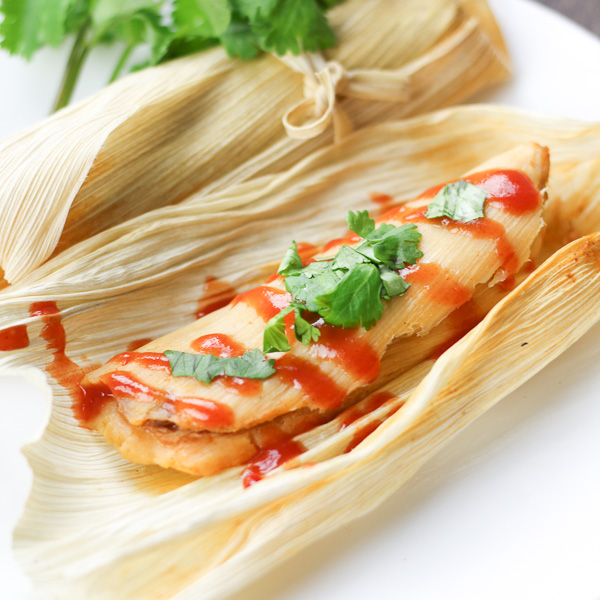
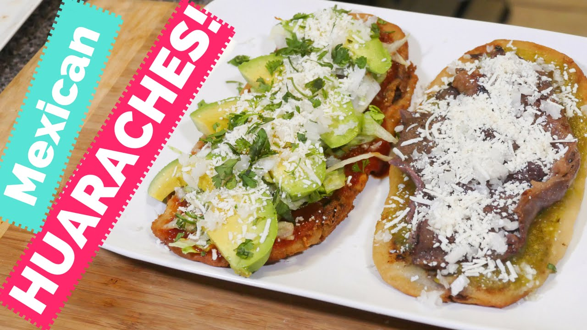
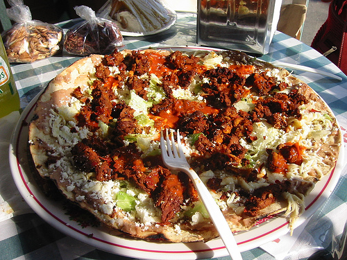

Mexican Food

Enchiladas- Place roast in a large saucepan, pour in water, and simmer on low for 30 minutes. Once the water has boiled away, pour in the beef broth, vinegar, chili powder and 1 tablespoon of cumin. Simmer for about 2 hours or until the beef falls apart when lifted. Shred the beef and place the shredded beef back into the saucepan with all the juices, and let cool to room temperature.
In a large skillet, saute the onion, mix in flour and green chilies. Stir in sour cream and 2 cups of Monterey Jack cheese. Cook on low for 10 minutes until the cheese is all mixed. Set aside and let cool.
In a large heavy skillet, heat the olive oil. Using tongs dip the tortillas, one at a time for 30 seconds each side. Drain on paper towels.
Preheat oven to 375 degrees F. Spread sour cream mixture down the center of the tortilla. Top with about the same amount of beef. Roll up and place seam side down in 8x11 inch baking dish. Repeat for each tortilla. Sprinkle with remaining Monterey Jack cheese.
Bake in a pre-heated oven for 30 minutes or until cheese is melted and bubbling

Pozole- Heat water in a large stock pot. Add chicken, onion and garlic. Bring to a boil, then lower the heat and let simmer, partially covered for 2 and half hours or until chicken is tender and falling off the bone. Season with salt when chicken is almost done. While cooking, skim top layer of foam and fat from the pot using a ladle. Remove chicken from broth; reserve broth. Trim excess fat, and remove chicken from bones; discard bones, onion and garlic from the broth. Now for the sauce, soak the ancho and guajillo peppers in water just enough to cover for 25-30 minutes until soft. Using a blender or food processor blend peppers, garlic cloves, onion and oregano, adding some of the water in which they were soaking. Puree mixture until smooth. Heat oil in a large skillet. Add the dry pepper puree and salt to taste, stirring constantly as it splatters. Reduce heat to medium; simmer, about 25 minutes. Using strainer, add the sauce to the broth. Bring to a boil and add the chicken,simmer gently for about 10 minutes. Stir in white hominy, and season with salt and pepper. Simmer until heated through.

Tamales- Place pork into an oven with onion and garlic, and add water to cover. Bring to a boil, then reduce heat to low and simmer until the meat is cooked through, about 2 hours. Use rubber gloves to remove stems and seeds from the chile pods. Place chiles in a saucepan with 2 cups of water. Simmer for 20 minutes, then remove from heat to cool. Transfer the chiles and water to a blender and blend until smooth. Strain the mixture, stir in salt, and set aside. Shred the cooked meat and mix in one cup of the chile sauce. Soak the corn husks in a bowl of warm water. In a large bowl, beat the lard with a tablespoon of the broth until fluffy. Combine the masa harina, baking powder and salt; stir into the lard mixture, adding more broth as necessary to form a spongy dough. Spread the dough out over the corn husks to 1/4 to 1/2 inch thickness. Place one tablespoon of the meat filling into the center. Fold the sides of the husks in toward the center and place in a steamer.Steam for 1 hour.

Huaraches- To make the huaraches you must combine masa harina, salt, and 1 cup warm water in a large bowl, and stir until a smooth dough forms. Knead dough in bowl until very smooth but not sticky, about 2 minutes. Divide dough into quarters and shape each quarter into a 7"-long, 1⁄4"-thick oval. Heat 1 tbsp. oil in a cast-iron skillet over medium-high heat. Add 1 huarache to skillet, and cook until blackened in spots. Flip and immediately spread with 1⁄4 cup salsa and 1⁄2 oz. cheese; continue cooking until blackened in spots on bottom. Transfer to a serving plate. Add meat and any other toppings such as beans, lettuce, avocado, etc.

Tlayuda-Place 1 oversized tortilla on a baking sheet or pizza stone and spread with 1/2 tablespoon lard if using, and then a quarter of the refried bean puree. Add a quarter of the avocado, sprinkle with hot sauce to taste and top with a quarter of the cheese. Bake until the cheese is melted, about 5 minutes. Add any desired toppings which include meat, lettuce, diced tomatoes, cilantro, onions, etc.